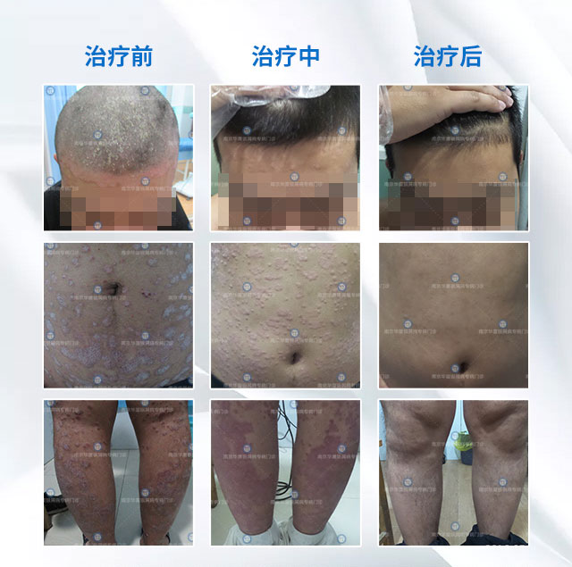

年月日 14:55:43
来源：39健康网-牛皮癣专科
"董主任，我真是后悔没有早点让你治疗，白花了这么多钱，身体也差点废了，是您救了我！"一位被顽疾折磨了近20年的大姐说。
"董叔叔，我喜欢这样叫您，您在治疗时对我关怀备至，好像自己的孩子一样……"一位23岁的小伙说。
"董主任，真不知道该怎么感谢您了，您让我的女儿不再嫌弃我。"一位40多岁的大叔说。
"董叔叔，我也开始对医学感兴趣了，我在您身上看到了医生美好的医德！"一位即将高考的学生说。
"董主任，治好了后还可以找你咨询吧，你不要嫌我烦。"一位恢复效果非常好的患者说到。
"我们全家都替我感到高兴，说我很幸运，遇到了一个好医生。"一位治疗康复的新手妈妈说。
"董主任，您每天为这么多患者看病，也一定要注意身体呀！"一位60多岁的大娘说到。
……
这位被众多患者如此称赞的医生就是董主任，在华东地区银屑病领域绝对是不可多得的殿堂级人物。
绝境多得董主任
祛癣不在是梦痴
中西医结合，分型分诊分期诊疗，制定专属治疗方案
小蒙：我今年26岁，在十八岁的时候就患银屑病了，那时的我感受到了绝望，在治疗的过程中用了八年的时间但是依然没有效果，中途和用了很多的西药和激素药，一开始很有效果但是反弹的也很厉害。董主任内调外治的治疗方法配合物理治疗很快我的皮损就稳定了下来，现在己经进入巩固期了，我的生活也恢复到正常了。
孙先生：我是一名大学生，在7岁的时候因为一场意外得了银屑病，从那以后不敢出去玩，也不敢穿短袖短裤，也害怕别人异样的眼光，是董主任给我了生活的希望，在经过检查以后，董主任给我制定了专属的治疗方案，针对性治疗很快让我的皮损就稳定了，现在我已经康复了，我也要成为董主任那样一心只为患者的医者。
张先生：今年50岁，患银屑病有七八年了，整个背部几乎看不到好的皮肤，奇痒难耐，白天工作就没法安心的待在座位上，被领导批评了多次，更难受的是到了晚上，折磨的我难以入眠，翻来覆去，有时候拿头在床上撞，长此以往，陷入恶性循环，身心受到多重伤害；经过中西医结合的治疗方法，我现在已经达到临床治愈了。
祛癣路上的开荒者——"祛癣圣手"董主任
董主任从事银屑病研究与治疗30余年，擅长银屑病的临床诊疗，拥有丰富的临床诊疗经验与扎实的医学知识。熟悉各类型银屑病的诊疗技术，尤其擅长治疗复发性银屑病、顽固性银屑病的临床诊治技术，治疗技术全面，临床疗效显着，具有治愈率高、见效快、副作用少、不易复发等特点，被患者亲切的称为"祛癣圣手"。

扫下方↓↓↓二维码可在线问诊！
董主任从一开始从事银屑病诊疗工作中，国内治疗技术局限很大，银屑病往往又极易和其他红斑类的牛皮癣混淆，银屑病患者误诊误治的例子，比比皆是，就算诊断出银屑病，由于国内缺少专门针对银屑病治疗的技术，只能和其他牛皮癣用同一种治疗方案，一方多人，屡见不鲜。
在董主任接诊的患者中，有很多都是没有经过正规的治疗或者是检查导致误诊误治的现象是非常多的。银屑病的诊疗充满挑战，道阻且长，但狭路相逢勇者胜。董主任说"科研是未来医院发展的"重头戏"。是进一步提升银屑病诊疗能力，解决临皮癣反复等常见难题的关键路径。"
↑↑↑这几张图是董主任接诊时的照片
一人一方，见招拆招！
分型分诊，高效祛癣！
一直保持初心，做一件事并不难，难的是不忘初心，坚持了30多年，一如当初一样热情，耐心，对患者有责任，董主任在接诊中，经常看到患者带着希望而来，他经常说"对待患者要负责，要耐心，因为银屑病是一种很难缠的牛皮癣，患者往往被它弄的心力交瘁，非常的敏感，抑郁，我们是医者，不仅要医好患者的身体，更要医好患者的心里，让他们从身心都重获健康，勇敢面对生活。"
忠诚践行医者使命
愿作银屑病患者的"守护人"

祛除顽癣——改变你的人生！
你还因为顽癣，求职失败！相亲失败！婚姻破裂？？
你是不是吃了很多药，花了很多钱，仍然顽癣缠身，久治难愈？
机会就在眼前，奇迹已经发生！皮癣容易扎根，拖下去小问题会变成大问题，早治早好才是上策！
扫下方↓↓↓二维码可在线问诊！
也可加微信：HBT2001a在线免费咨询
★★★有牛皮癣、红疹、红斑、手足癣等牛皮癣的朋友，加董医师微信，说出自己的情况，让癣症消失★★★
 沙发清水
沙发清水2020-09-01
我有发言权！我十多年的银屑病，全身被蚕豆大的灰白色鳞屑覆盖，状如松树皮，浑身奇痒无比，一抓就见血。上个月抱着试一试的心态加了董医师微信，结果当天瘙痒明显减轻，半个月皮损鳞屑减少，皮疹消退，现在虽然没有完全康复，但再坚持两三月肯定能好！
喜欢回复
2019-06-15
哈哈，比我想象恢复的速度还快！
喜欢回复
 板凳不猜
板凳不猜2018-06-15
刚开始是头上有屑，没注意，结果扩散严重了，看了3年，反复复发，没有好，期间抹药抹的皮肤都起水泡了，而且蛋蛋上面摸一点就起水泡了，走路什么的都不好办，那种感觉你们可懂？前阵子上网，无意加了加了董医师调理了3个疗程，效果真的很好，至今身上没有留下任何印记。
喜欢回复
沙发赌气2019-01-19
哈哈，我也是老师的忠实粉丝，现在老师一直在指导我用药，还有平时叮嘱我不要染发烫发，不能吃辣的，甜的，油的，比如奶油之内的最好不要吃，每天运动，不知道为什么，真的就好了很多很多了，现在胳膊、大腿、脚腕上的癣斑都没有了，不过平常还是要注意。
喜欢回复
2019-01-20
记得平时也要养成良好的生活习惯，才能杜绝后患。
喜欢回复
板凳凳子2019-07-07
他是怎么给你们调理的？我老公也有这方面的问题，牛皮癣 年轻时候就有了，试了好多办法都不顶用，你们说的这个名医真能治好牛皮癣吗？
喜欢回复
板凳杨民城2019-06-25
我是银屑病，看了之后默默的加了董医师的微信，真不容易，开心！希望也能早点康复，看到朋友圈里每天都有好多人调理好了，我都有点迫不及待了
喜欢回复
沙发朋友2019-06-15
去年开始，我上臂、大腿长硬疹子，活像鸡皮疙瘩，一到夏天更痛苦，捂着跟怪物一样，去了少说也有七八家大医院了，没一点好转，没有一点改善，跳楼的心都有。
喜欢回复
2019-06-15
想开点，千万别耽搁了，及时就医。
喜欢回复
民城2019-06-15
董医师我接触过，他治牛皮癣是一绝！本人7年银屑病，身上有大片棕黑色鳞屑，由于面积大，连换皮手术都不能做，找董医师调理了小半年了，现在长出了新皮，谁要不信，给你发照片！对了，老师微信号就是这个： 150330687301503306873015033068730 ，不过好像他比较忙，每天亲自开方配方，我有时跟他聊，回复都很慢，大家加上耐心等待就行，老师人很好，看到一定会回的。
喜欢回复
杨民城2019-06-15
楼主，你说的这是董医师吧？医学的的代表呀！30多年的临床经验，没有他看不好的牛皮癣，能不厉害吗？能找他给你看可算你走运了，我们这的人想找他看还看不上呢
喜欢回复
2019-06-15
楼主握个手！我也是在微信上加了董医师！接近10年的牛皮癣 啊，调理了半个月，现在一次也没犯过！之前犯起来的时候全身都是红斑，痒的我满地打滚，很不能把皮给撕了，我家里人都吓坏了，呵呵，希望也能像你一样彻底断根吧！
喜欢回复
 张家祥
张家祥2019-06-15
我被牛皮癣折磨了差不多9年了，一直寻医问药，就是治不好。后来我表哥推荐我加了董医师微信号，现在已经基本上全好了。
喜欢回复
 王莹莹
王莹莹2019-06-15
不是吧，楼主找的也是董医师？没想到他的知名度这么大了，呵呵。之前我男朋友也是严重的皮癣，痒起来就看他不停的抓，经常抓的血肉模糊，想跟他亲热一下都提心吊胆的怕传染，后来也是通过董医师的微信指导，才慢慢好转，鳞屑全掉光，跟他在一起再也不担心了。
喜欢回复
2019-06-15
李祥贺：楼主，董医师的微信号是 HBT2001a，水平很高的名医，没想到开微信了，好新潮啊，这联系起来就方便多了！
喜欢回复
2019-06-15
我顽固性皮肤瘙痒快14年了，去过至少10家医院都没用，董医师的方子我刚用上，用药三天就不痒了，听楼主这么说我更有信心了！老师人挺好的，虽然回复慢了点（毕竟问他的人多，可以理解），但每一个问题都会帮我仔细分析，一点架子都没有，很感动！
喜欢回复
2019-06-15
他是怎么给你们调理的？我老公也有这方面的问题，牛皮癣 年轻时候就有了，试了好多办法都不顶用，你们说的这个名医真能治好牛皮癣吗？
喜欢回复
2019-06-15
楼上的，是真是假你自己加一下不就知道了，我刚加了他，看他朋友圈有好多关于牛皮癣的知识。
喜欢回复
 奥林斯
奥林斯2019-06-15
我接受过董医师的调理指导，比较有资格说这个话题，他的方子效果没得说（我之前寻常型的银屑病有七八年，现在已经完全好了），但是一定要注意一点，那就是必须按他的指导来！调理期间不能随心所欲，这样才能调出好结果。如果做不到就不要去加，免得浪费他的时间和精力！
喜欢回复